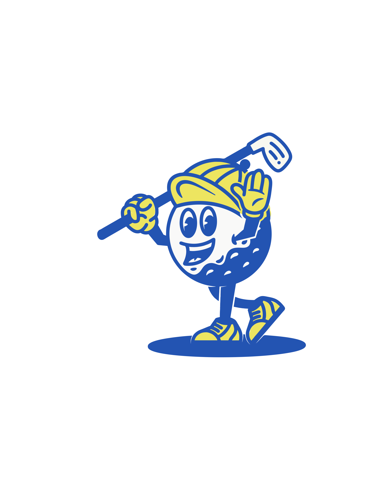

The CyberSaints is a student-led cybersecurity organization that is driven to develop and enhance the skills of its members in various areas within information technology. These areas include, but are not limited to, networking, database design, programming, malware analysis, system design, and computer hardware.
For information regaurding the 2023 Top Golf Fundraiser click the button below.
